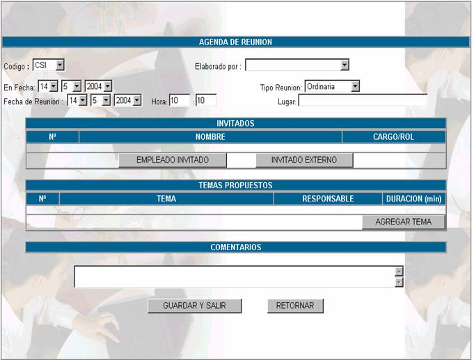
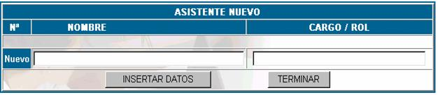
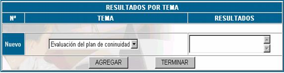

ACTAS
Agenda
Las reuniones de la comisión de sistemas y de los subcomités, tanto de adquisiciones, seguridad, continuidad, proyectos, deberán ser planificadas y documentadas en esta opción teniendo en cuenta las consideraciones que se presentan en el manual de procedimientos de dirección y administración de la tecnología.
Haciendo click en esta opción se muestra la siguiente pantalla principal.
Fecha; establece la fecha para la cual se realizará la reunión
Codigo; especifica el código con el cual se registró la reunión
N°; el número de reunión.
Elaborado por; especifica el nombre de la persona que organizó la agenda.
Tipo de reunión; especifica si la reunión es ordinaria, extraordinaria o de emergencia.
Lugar; especifica el lugar donde se llevará a cabo la reunión.
Nueva agenda de reunión; muestra la siguiente pantalla principal.

Donde:
Codigo; se debe especificar si el grupo de reunión es CSI, CCP, CRC u otro tipo de agenda que se pueda registrar.
Elaborado por; se refiere al nombre de la persona encargada de realizar la agenda de reunión.
En fecha; en este campo se debe anotar el día en el que se registra la reunión, es diferente del día en el que se lleva a cabo.
Tipo de reunión; en este campo se debe especificar si la reunión es ordinaria, extraordinaria o de emergencia.
Fecha de reunión; se anota la fecha en la cual se llevará a cabo la reunión, por supuesto esta fecha no puede ser anterior a la fecha de registro.
Hora; en este campo se debe especificar la hora en la cual se llevará a cabo la reunión, tenga cuidado de anotar la hora utilizando 0 en caso de que la hora sea unitaria es decir si la reunión es 8:05 anote 08:05 y cuando anote horas pm las realice en términos de 24 horas.
Lugar; en este campo se anota la sucursal y la sala donde se realizará, si es necesario realice una descripción detallada del lugar donde se realizará.
Invitados; para realizar una reunión, se requiere la presencia de miembros que corresponden a la Comisión de sistemas o a alguno de los subcomites, a estas personas se las anota como invitados, estas personas pueden ser de la empresa o no, si es que son de la empresa haga click en el botón EMPLEADO INVITADO y le aparecerá la siguiente pantalla.

Nombre; en este campo se debe escoger el nombre del empleado de la empresa que participará como invitado en la reunión.
Cargo; este campo se llena automáticamente en función del cargo con el que esté registrado el invitado.
Presione INSERTAR DATOS para insertar un invitado y TERMINAR, para retornar a la agenda de reunión.
Si se necesita de la presencia de una persona ajena a la empresa haga click en el botón INVITADO EXTERNO , y aparecerá la siguiente pantalla.
Nombre; coloque el nombre de la persona a la cual se está invitando y que es ajena a la empresa.
Cargo Rol; coloque el cargo que desempeña en la empresa en que trabaja.
Presione sobre el botón INSERTAR DATOS para añadir al invitado a la lista de invitados y TERMINAR para regresar a la agenda de reunión.
Temas propuestos; se deben establecer los puntos que serán tocados en la reunión, estos temas son de interés de todos los miembros que participarán en la reunión.
Para agregar un nuevo tema de reunión haga click en el botón AGREGAR TEMA y aparecerá la pantalla siguiente.
Tema; se debe registrar el nombre del tema el cual se tocará en la reunión.
Responsable; se debe registrar el nombre del proponente del tema, para efectos de control.
Duración; en este campo se anota el tiempo estimado que da el proponente del tema para terminar la discusión del tema.
Una vez que se hayan registrado los anteriores campos presione INSERTAR DATOS para insertar el nuevo tema y TERMINAR para regresar a la Agenda de Reunión.
Comentarios; se anota los comentarios adicionales que considere el responsable de realizar la agenda de reunión.
Presione GUARDAR Y SALIR para que se registren los datos de la reunión.
Modificar reunión; para realizar cambios a la agenda de reunión haga click en MODIFICAR y aperecerá la pantalla siguiente.
Como puede observar aquí aparecen todas las opciones que se colocó en el momento de realizar el llenado, pero en los temas y los invitados aparece una nueva opción que es ELIMINAR, esta opción le permite eliminar invitados o temas
Haciendo click sobre el vinculo, claro que el sistema le preguntará si esta seguro eliminar invitados o temas.
Imprimir reunión; esta opción permite ver una descripción completa en un reporte de la agenda de reunión.
Llenar minuta; la minuta se llena después de efectuada la reunión planeada, para establecer aspectos de control de la reunión y resultados. Haga click en el enlace MINUTA para comenzar con el registro de la minuta, aparecerá la siguiente pantalla de llenado de datos.
Donde:
Codigo; se debe especificar si el grupo de reunión puede ser CSI, CCP, CRC u otro
Elaborado por; se refiere al nombre de la persona encargada de realizar la minuta de reunión.
En fecha; en este campo se debe anotar el día en el que se registra la reunión, es diferente del día en el que se lleva a cabo.
Tipo de reunión; en este campo se debe especificar si la reunión es ordinaria, extraordinaria o de emergencia que se llevó cabo.
Fecha de reunión; se anota la fecha en la cual se llevó a cabo la reunión, por supuesto esta fecha puede ser anterior a la fecha de registro de minuta.
Hora; en este campo se debe especificar la hora en la cual se llevó a cabo la reunión, tenga cuidado de anotar la hora utilizando 0 en caso de que la hora sea unitaria es decir si la reunión es 8:05 anote 08:05 y cuando anote horas pm las realice en términos de 24 horas.
Lugar; en este campo se anota la sucursal y la sala donde se realizó la reunión.
Asistentes; en esta parte se anota el nombre de las personas, tanto invitados externoscomo miembros de la comisión del sistemas o de los subcomites que asistieron a la reunión, puede ser que los asistentes hayan sido los registrados en la agenda de reunión, presione el botón VERFICAR ASISTENTES, para verificar los asistentes de la reunión y aparecerá la siguiente pantalla.
Nombre; en este campo se debe escoger el nombre del empleado al cual se le está verificando la asistencia, para realizar la verificación, solamente se toma en cuenta a los invitados internos y externos.
Cargo; este campo se llena automáticamente en función del cargo con el que esté el empleado al que se está registrando.
Presione INSERTAR DATOS para insertar un invitado y TERMINAR, para retornar a la minuta de reunión.
Puede ser que haya asistido a la reunión una persona no prevista en la lista de invitados, entonces para registrar a esta persona dentro e la minuta de reunión presione el botón AGREGAR ASISTENTES.

Nombre; coloque el nombre de la persona que asistió a la reunión pero que no se contempló en la lista de invitados
Cargo Rol; coloque el cargo que desempeña dentro de la empresa.
Presione sobre el botón INSERTAR DATOS para añadir al invitado a la lista de invitados y TERMINAR para regresar a la minuta de reunión.
Temas discutidos; para realizar la verificación de los temas propuestos por los miembros de la reunión presione el botón VERIFICAR TEMAS y aparecerá la pantalla siguiente
Tema; las opciones de selección son aquellas que se registraron en la agenda de reunión, escoja una de ellas
Responsable; esta opción no es opcional, debido a que el responsable en el registro del tema, el responsable, fue la persona quién propuso el tema de discusión.
Duración; la duración no puede sobrepasar a la planeada .
Presione AGREGAR para realizar la verificación de temas y presione TERMINAR para volver a la minuta de reunión
Puede ser que en la reunión hayan surgido nuevos temas de discusión para poder agregar estos temas haga click en AGREGAR TEMA y llene los datos correspondientes al nuevo tema que surgió.
Resultados por tema; cada tema al final de lareunión debe tener un resultado, entonces para registrar estos, presione en el botón AGREGAR RESULTADOS , pero recuerde que solo se pueden agregar resultados a los temas verificados.

Tema; usted podrá registrar los resultados de los temas verificados, eligiendo el tema
Resultado; luego se registra el resultado del tema verificado.
Acciones por tema; las acciones que se toman analizando los resultados de los temas se registran en esta parte, para poder llenar las acciones de cada tema haga click en AGREGAR ACCIONES y aparecerá la pantalla siguiente:

Tema; usted puede elegir entre los temas, de los cuales se registraron resultados
Acción; en este campo se registra la acción que se tomará respecto al tema, en función de los resultados.
Responsable; en este campo se establece el nombre del responsable de la acción que se toma.
Fecha limite; en este campo se establece la fecha limite para tomar acción.
Modificar minutas; si usted desea modificar algún dato de la minuta haga click en el vinculo MODIFICAR y aparecerá una pantalla con los datos establecidos en la etapa de registro.
Imprimir minutas; si usted desea obtener un reporte de la minuta de reunión correspondiente haga click en el vinculo IMPRIMIR.